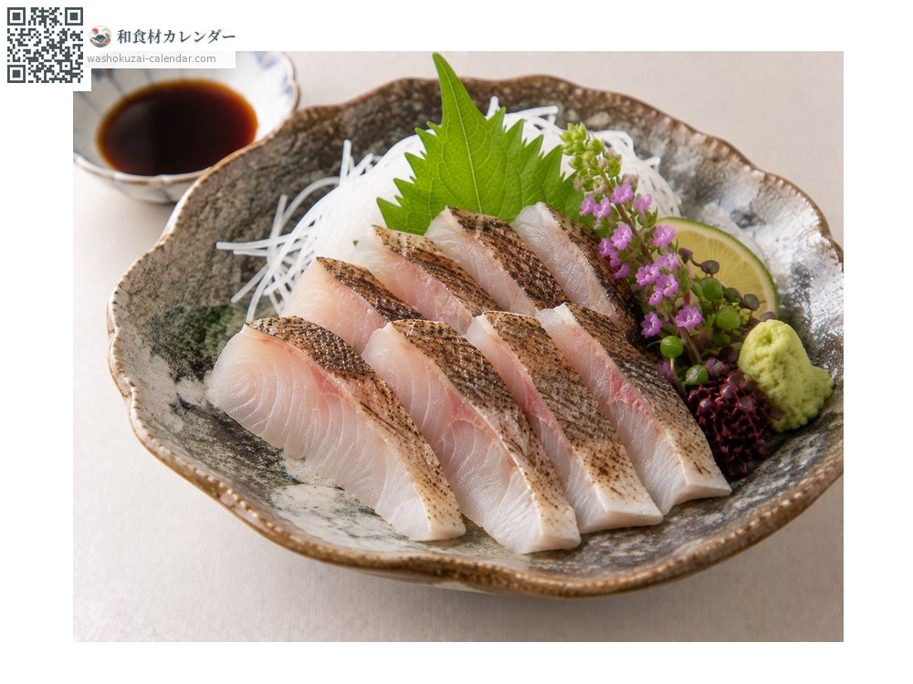
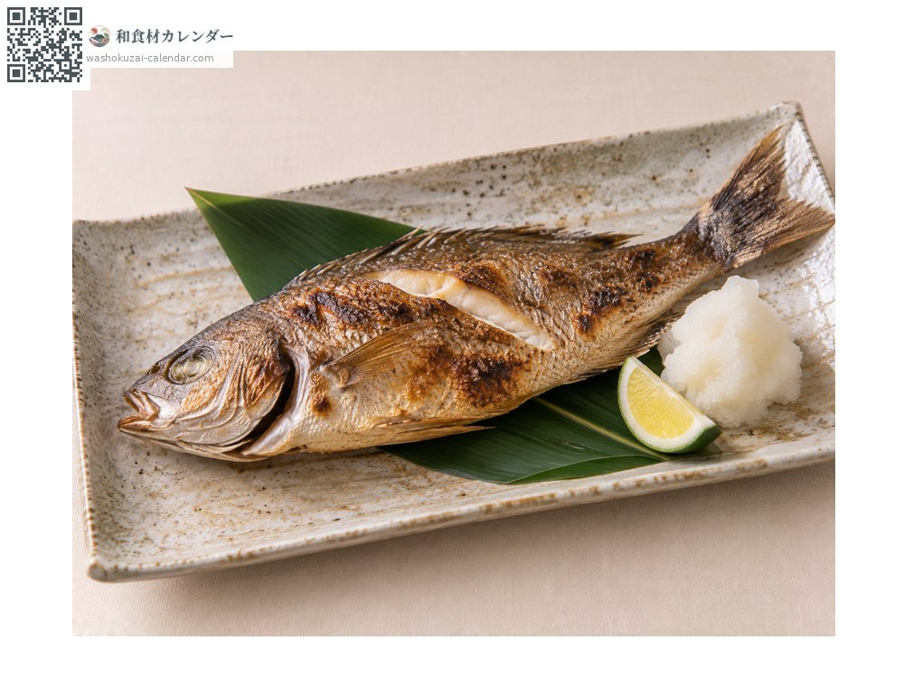
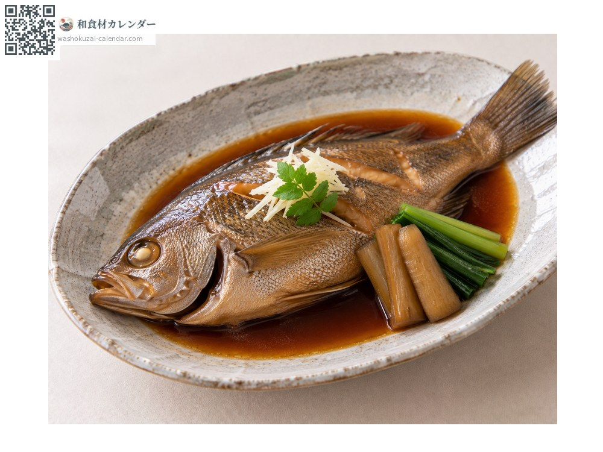
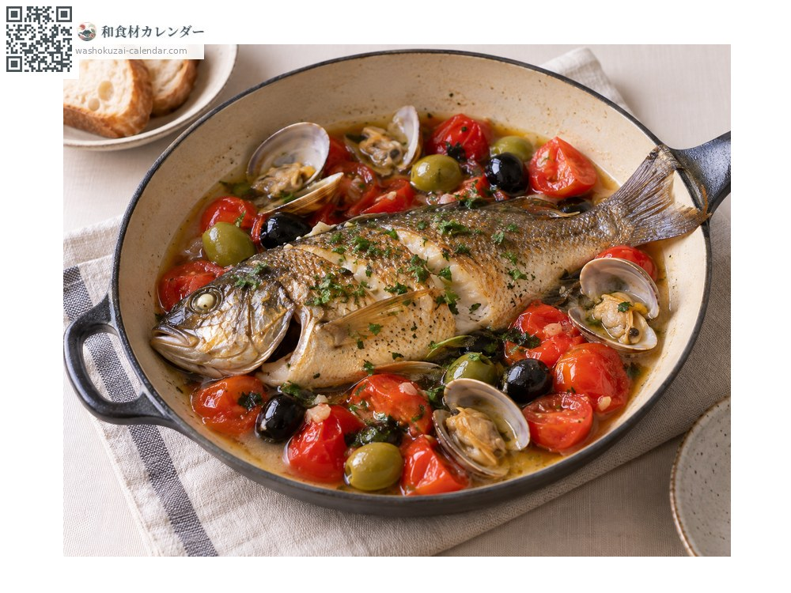

魚介
イサキ
いさき
別名・別表記伊佐木、鶏魚、isaki
旬は5月・6月・7月

旬の時期
1月
2月
3月
4月
5月
6月
7月
8月
9月
10月
11月
12月
旬出回り
調理法

刺身
脂がのって甘みがある。皮を炙っても。

塩焼き
身がふっくら仕上がる。

煮付け
甘辛く煮て。

アクアパッツァ
洋風の煮込みにも合う。
選び方
体色が黄色みを帯び、体に厚みがあるもの。目が澄んでいるもの。
保存方法
内臓を取って冷蔵。1〜2日で使い切る。
主な産地
豆知識
梅雨時期に脂がのり「梅雨イサキ」と呼ばれる。若魚には黄色い縦縞があり「ウリボウ」とも。